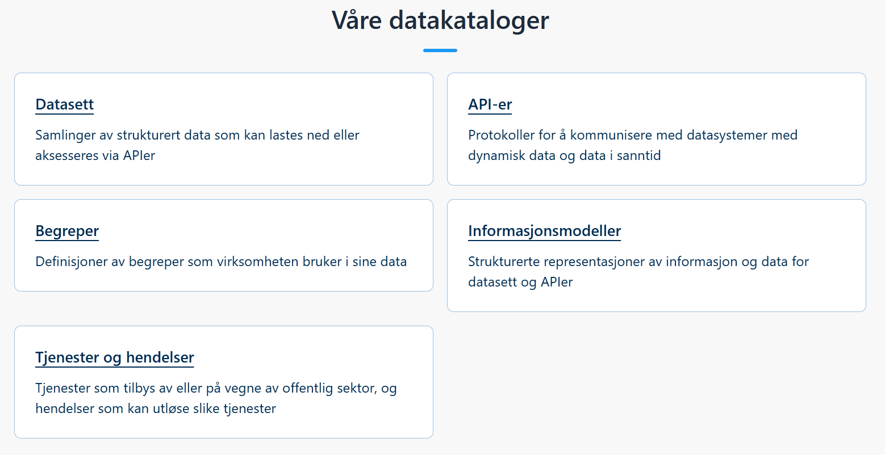
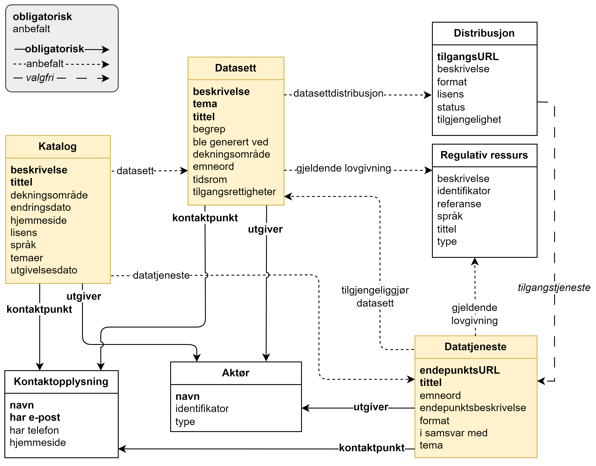
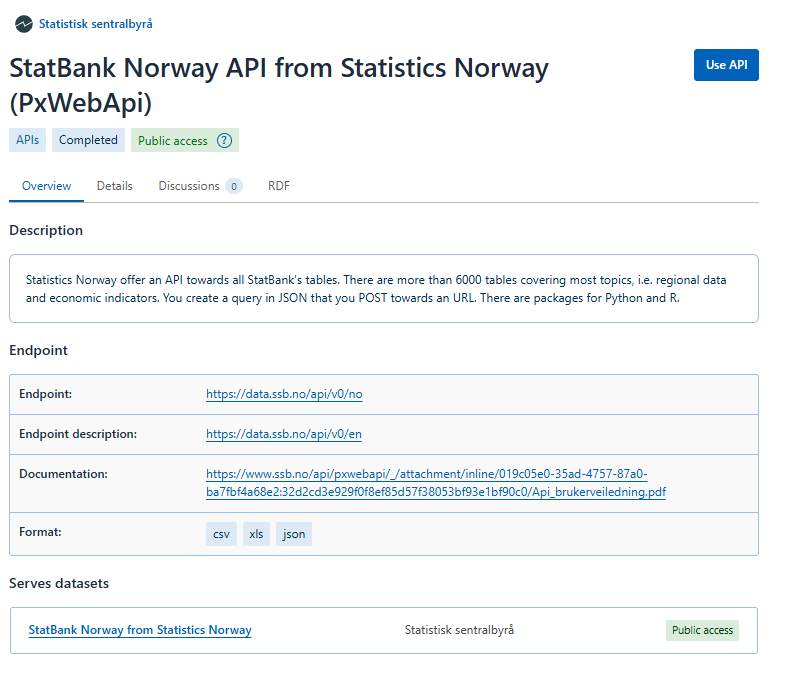
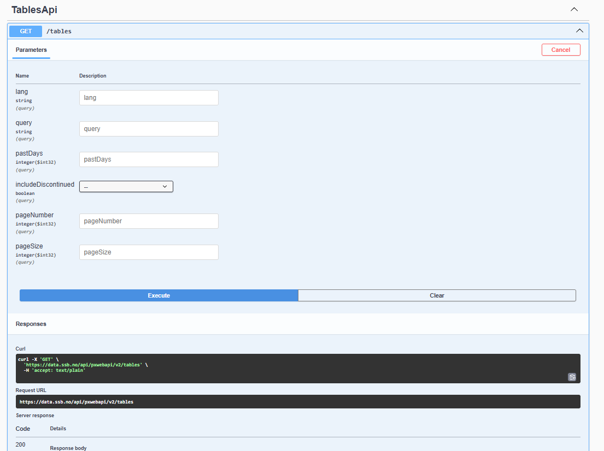
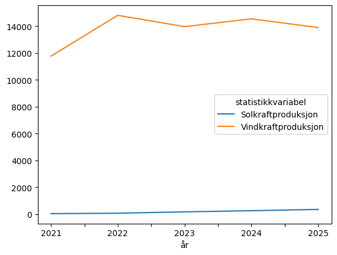

Application Programming Interface#
Det er mulig aksessere en webside eller database gjennom et Application Programming Interface (API). Deretter foreta et API-kall med en forespørsel, eller en ‘query’.
Et API muliggjør kommunikasjon mellom servere.
Fordelen med API#
Med API kan du lage spørringer som henter oppdaterte tall. API gjør det lettere å hente tall for videre analyse.
Det er mer fleksibelt og mer avansert enn å laste ned data fra et brukergrensensittet bestemt av den som har laget nettsiden.
Det er lettere å tilpasse akkurat de data du trenger, og så lenge det er kontakt mellom deg (klient) og nettstedet (server) har du tilgang til dataene uten å måtte lagre lokalt.
Video: Finne API-endpoint#
Denne videoen viser hvordan man finner fram til et API-endepunkt
REST API#
En Representational State Transfer (REST) er en programvare-arkitektur som definerer kommunikasjon i et nettverk mellom client og server i et nettverk. Kommunikasjonen skjer gjennom et regelverk; hypertekstoverføringsprotokoll, Hyper Text Transfer Protocol (HTTP).
Forespørsler skjer gjennom request biblioteket som lar deg benytte en hypertekstoverføringsprotokoll i python miljøet.
Pythons requests er et brukervennlig bibliotek som tilgjengelig for intallasjon på Pypi:
$ python -m pip install requests
Metoden .get() brukes til en HTTP GET-forespørsel fra nettleseren din (klienten) til serveren gjennom nettstedets URL-adresse. Nettstedet gir et respons gjennom en statuskode. Kode 200 betyr at siden eksisterer og fungerer. Ethvert nettsted vi prøver å aksessere vil gi oss en statuskode:
import requests
api_url = "https://usn.no"
response = requests.get(api_url)
print(response.status_code)
200
Satus kode 200 vil si at siden eksisterer og vi har kontakt. Alt ligger til rette for å dele data mellom deg (klienten) og nettstedet (server).
Javascript Object Notation#
Standard formatet for overføring av tekst i nettverk er Javascript Object Notation (JSON). Det er lett å forstå både for mennesker og maskiner og er filformatet som brukes i databaser og API. JSON lagrer data i nøkkel-verdi par, ikke ulikt python dictionary, som en samling dataelementer av forskjellig datatype, der datene indekseres med nøkkel i form av en tekststreng. Se ressursiden til Python for realfag TechTeach, oppgave 3.11.
JSON nøkkel er alltid et string objekt, innelukket i en krøllparantes og alltid med dobbelt anførselstegn ". Verdiene som korresponderer til nøkkelen kan være hvilken som helst data type, nøstet JSON, eller andre sekvens data.
For å lese JSON i python bruker vi python-bibliotekt json
import json
s = '{"language": "Python", "version": 3.11}'
d = json.loads(s)
print(d)
{'language': 'Python', 'version': 3.11}
json biblioteket muliggjør konvertering til python dictionary:
import json
emp = '{"id":"09", "name": "Nitin", "department":"Finance"}'
print("This is JSON", type(emp), emp)
print("Now convert from JSON to Python")
d = json.loads(emp)
print("Converted to Python", type(d))
print(d)
This is JSON <class 'str'> {"id":"09", "name": "Nitin", "department":"Finance"}
Now convert from JSON to Python
Converted to Python <class 'dict'>
{'id': '09', 'name': 'Nitin', 'department': 'Finance'}
API endepunkt#
Også når vi aksesserer apiet får vi gyldig status, fordi vi klarer å oppnå kontakt med nettstedet. Men vi får feilmelidng fordi nettstedet ikke inneholder .json(). Det er derimor en html side. Selv om vi skriver inn
"https://data.ssb.no/api"
har vi ikke fått kontakt med datatabeller i .json fil men med en html-side.
import requests
api_url = "https://data.ssb.no/api"
response = requests.get(api_url)
print(response.status_code)
#print(response.json())
import traceback
response = requests.get("https://data.ssb.no/api")
try:
data = response.json()
except Exception:
print('Feilemelding:',traceback.format_exc().splitlines()[-1])
print(response.headers["Content-Type"])
200
Feilemelding: requests.exceptions.JSONDecodeError: Expecting value: line 1 column 1 (char 0)
text/html;charset=utf-8
For å få kontakt med den informasjonen API-et inneholder må vi nå endepunktsURL (endpoint). Nettstedet Data.norge.no har oversikt over data fra norsk offentlig sektor, med en egen datakatalog over API-er

Alle API-ene i katalogen følger standard for beskrivelse av datasett, datatjenester og datakataloger (DCAT-AP-NO) der endepunktsURL er standardinformasjon.
En datatjeneste
SKAL alltid beskrives med opplysninger om utgiveren av datatjenesten og kontaktpunkt, samt tittel og endepunktsURL til datatjenesten

Et søk etter statistikkbanken her gir endepunktsURL til datatabeller

Open API#
OpenAPI er en standardisert beskrivelse av et API, som kommer med en egen dokumentasjon Swagger UI er et verktøy som viser denne beskrivelsen som en interaktiv nettside. På SSB’s swagger kan man teste ut forskjellige .getforespørsler. En blank forespørsel gir endpunktsURL for alle tabeller.
https://data.ssb.no/api/pxwebapi/v2/tables
from IPython.display import Image
Image("../images/swagger.png", width=500, height=400)

Video: Lage API-query#
Denne videoen viser hvordan man lager et API-query
import requests
api_url = "https://data.ssb.no/api/v0/no"
response = requests.get(api_url)
print(response.status_code)
print(response.json())
200
[{'dbid': 'table', 'text': 'Statistikkbanken etter emne'}]
Med pandas kan man få ut tabellen som en lesbar ‘dataframe’, som i dette tilfellet er tabellen over tabeller:
import pandas as pd
import requests
api_url = "https://data.ssb.no/api/v0/no/table"
response = requests.get(api_url)
df = pd.DataFrame(response.json())
print(df.head())
id type text
0 al l Arbeid og lønn
1 bf l Bank og finansmarked
2 vf l Bedrifter, foretak og regnskap
3 be l Befolkning
4 bb l Bygg, bolig og eiendom
import requests
api_url = "https://data.ssb.no/api/v0/no/table/08307"
response = requests.get(api_url)
print(response.json())
{'title': '08307: Produksjon, import, eksport og forbruk av elektrisk kraft (GWh), etter statistikkvariabel og år', 'variables': [{'code': 'ContentsCode', 'text': 'statistikkvariabel', 'values': ['ProdTotal', 'VannKraft', 'VindKraft', 'Solkraft', 'VarmeKraft', 'Import', 'Eksport', 'Bruttoforbruk', 'ForbrukKraftStasj', 'Pumpekraftforbruk', 'TapStatistDiff', 'Nettoforbruk'], 'valueTexts': ['Produksjon i alt', 'Vannkraftproduksjon', 'Vindkraftproduksjon', 'Solkraftproduksjon', 'Varmekraftproduksjon', 'Import', 'Eksport', 'Bruttoforbruk', 'Forbruk i kraftstasjonene (-2019)', 'Pumpekraftforbruk', 'Tap og statistisk differanse', 'Nettoforbruk']}, {'code': 'Tid', 'text': 'år', 'values': ['1950', '1955', '1960', '1961', '1962', '1963', '1964', '1965', '1966', '1967', '1968', '1969', '1970', '1971', '1972', '1973', '1974', '1975', '1976', '1977', '1978', '1979', '1980', '1981', '1982', '1983', '1984', '1985', '1986', '1987', '1988', '1989', '1990', '1991', '1992', '1993', '1994', '1995', '1996', '1997', '1998', '1999', '2000', '2001', '2002', '2003', '2004', '2005', '2006', '2007', '2008', '2009', '2010', '2011', '2012', '2013', '2014', '2015', '2016', '2017', '2018', '2019', '2020', '2021', '2022', '2023', '2024', '2025'], 'valueTexts': ['1950', '1955', '1960', '1961', '1962', '1963', '1964', '1965', '1966', '1967', '1968', '1969', '1970', '1971', '1972', '1973', '1974', '1975', '1976', '1977', '1978', '1979', '1980', '1981', '1982', '1983', '1984', '1985', '1986', '1987', '1988', '1989', '1990', '1991', '1992', '1993', '1994', '1995', '1996', '1997', '1998', '1999', '2000', '2001', '2002', '2003', '2004', '2005', '2006', '2007', '2008', '2009', '2010', '2011', '2012', '2013', '2014', '2015', '2016', '2017', '2018', '2019', '2020', '2021', '2022', '2023', '2024', '2025'], 'time': True}]}
Metoden .json() gir oss innholdet i repsonsen. Dette er metadata som gir data om dataen.
metadata = response.json()
print(metadata)
{'title': '08307: Produksjon, import, eksport og forbruk av elektrisk kraft (GWh), etter statistikkvariabel og år', 'variables': [{'code': 'ContentsCode', 'text': 'statistikkvariabel', 'values': ['ProdTotal', 'VannKraft', 'VindKraft', 'Solkraft', 'VarmeKraft', 'Import', 'Eksport', 'Bruttoforbruk', 'ForbrukKraftStasj', 'Pumpekraftforbruk', 'TapStatistDiff', 'Nettoforbruk'], 'valueTexts': ['Produksjon i alt', 'Vannkraftproduksjon', 'Vindkraftproduksjon', 'Solkraftproduksjon', 'Varmekraftproduksjon', 'Import', 'Eksport', 'Bruttoforbruk', 'Forbruk i kraftstasjonene (-2019)', 'Pumpekraftforbruk', 'Tap og statistisk differanse', 'Nettoforbruk']}, {'code': 'Tid', 'text': 'år', 'values': ['1950', '1955', '1960', '1961', '1962', '1963', '1964', '1965', '1966', '1967', '1968', '1969', '1970', '1971', '1972', '1973', '1974', '1975', '1976', '1977', '1978', '1979', '1980', '1981', '1982', '1983', '1984', '1985', '1986', '1987', '1988', '1989', '1990', '1991', '1992', '1993', '1994', '1995', '1996', '1997', '1998', '1999', '2000', '2001', '2002', '2003', '2004', '2005', '2006', '2007', '2008', '2009', '2010', '2011', '2012', '2013', '2014', '2015', '2016', '2017', '2018', '2019', '2020', '2021', '2022', '2023', '2024', '2025'], 'valueTexts': ['1950', '1955', '1960', '1961', '1962', '1963', '1964', '1965', '1966', '1967', '1968', '1969', '1970', '1971', '1972', '1973', '1974', '1975', '1976', '1977', '1978', '1979', '1980', '1981', '1982', '1983', '1984', '1985', '1986', '1987', '1988', '1989', '1990', '1991', '1992', '1993', '1994', '1995', '1996', '1997', '1998', '1999', '2000', '2001', '2002', '2003', '2004', '2005', '2006', '2007', '2008', '2009', '2010', '2011', '2012', '2013', '2014', '2015', '2016', '2017', '2018', '2019', '2020', '2021', '2022', '2023', '2024', '2025'], 'time': True}]}
Lager spørring (query)#
Vi definerer en spørring query i form av en liste ( [ ] ) og bestemmer hvordan vi vil ha svaret response i form av en dictionary ( { } ).
query = {
"query": [
{
"code": "ContentsCode",
"selection": {
"filter": "item",
"values": ["VindKraft", "Solkraft"]
}
},
{
"code": "Tid",
"selection": {
"filter": "all",
"values": ["*"]
}
}
],
"response": {
"format": "json-stat2"
}
}
import requests
url = "https://data.ssb.no/api/v0/no/table/08307"
query = {
"query": [
{
"code": "ContentsCode",
"selection": {
"filter": "item",
"values": ["VindKraft", "Solkraft"]
}
},
{
"code": "Tid",
"selection": {
"filter": "item",
#'filter': 'all',
"values": ['2021','2022','2023',"2024", "2025"]
#'values':['*']
}
}
],
"response": {
"format": "json-stat2"
}
}
response = requests.post(url, json=query)
data = response.json()
print(response.status_code)
print(data)
200
{'version': '2.0', 'class': 'dataset', 'label': '08307: Produksjon, import, eksport og forbruk av elektrisk kraft (GWh), etter statistikkvariabel og år', 'source': 'Statistisk sentralbyrå', 'updated': '2026-05-08T06:00:00Z', 'role': {'time': ['Tid'], 'metric': ['ContentsCode']}, 'id': ['ContentsCode', 'Tid'], 'size': [2, 5], 'dimension': {'ContentsCode': {'label': 'statistikkvariabel', 'category': {'index': {'VindKraft': 0, 'Solkraft': 1}, 'label': {'VindKraft': 'Vindkraftproduksjon', 'Solkraft': 'Solkraftproduksjon'}, 'unit': {'VindKraft': {'base': 'GWh', 'decimals': 0}, 'Solkraft': {'base': 'GWh', 'decimals': 0}}}, 'extension': {'elimination': False, 'refperiod': {'VindKraft': 'Hele kalenderåret', 'Solkraft': 'Hele kalenderåret'}, 'show': 'value', 'measuringType': {'VindKraft': 'Flow', 'Solkraft': 'Flow'}, 'priceType': {'VindKraft': 'NotApplicable', 'Solkraft': 'NotApplicable'}, 'adjustment': {'VindKraft': 'None', 'Solkraft': 'None'}}}, 'Tid': {'label': 'år', 'category': {'index': {'2021': 0, '2022': 1, '2023': 2, '2024': 3, '2025': 4}, 'label': {'2021': '2021', '2022': '2022', '2023': '2023', '2024': '2024', '2025': '2025'}}, 'extension': {'elimination': False, 'show': 'code'}}}, 'extension': {'px': {'infofile': 'None', 'tableid': '08307', 'decimals': 0, 'official-statistics': True, 'aggregallowed': True, 'copyright': False, 'language': 'no', 'contents': '08307: Produksjon, import, eksport og forbruk av elektrisk kraft (GWh),', 'descriptiondefault': False, 'heading': ['ContentsCode', 'Tid'], 'stub': [], 'matrix': 'VindKraft', 'subject-code': 'ei', 'subject-area': 'Energi og industri'}, 'discontinued': None, 'contact': [{'name': 'Magne Holstad', 'organization': 'Statistisk sentralbyrå', 'phone': '40 90 23 42', 'mail': 'gnh@ssb.no', 'raw': 'Magne Holstad, Statistisk sentralbyrå# +47 40 90 23 42#gnh@ssb.no'}, {'name': 'Thomas Aanensen', 'organization': 'Statistisk sentralbyrå', 'phone': '40 90 23 48', 'mail': 'tre@ssb.no', 'raw': 'Thomas Aanensen, Statistisk sentralbyrå# +47 40 90 23 48#tre@ssb.no'}]}, 'value': [11768, 14810, 13965, 14545, 13899, 33, 63, 165, 251, 348]}
Biblioteket pyjstat lager om til dataframe, som vi kan burke DateTimeIndex på.
from pyjstat import pyjstat
dataset = pyjstat.Dataset.read(response.text)
df = dataset.write('dataframe')
print(df)
statistikkvariabel år value
0 Vindkraftproduksjon 2021 11768
1 Vindkraftproduksjon 2022 14810
2 Vindkraftproduksjon 2023 13965
3 Vindkraftproduksjon 2024 14545
4 Vindkraftproduksjon 2025 13899
5 Solkraftproduksjon 2021 33
6 Solkraftproduksjon 2022 63
7 Solkraftproduksjon 2023 165
8 Solkraftproduksjon 2024 251
9 Solkraftproduksjon 2025 348
df = df.pivot(
index="år",
columns="statistikkvariabel",
values="value"
)
print(df)
statistikkvariabel Solkraftproduksjon Vindkraftproduksjon
år
2021 33 11768
2022 63 14810
2023 165 13965
2024 251 14545
2025 348 13899
df
| statistikkvariabel | Solkraftproduksjon | Vindkraftproduksjon |
|---|---|---|
| år | ||
| 2021 | 33 | 11768 |
| 2022 | 63 | 14810 |
| 2023 | 165 | 13965 |
| 2024 | 251 | 14545 |
| 2025 | 348 | 13899 |
import matplotlib.pyplot as plt
df.plot()
<Axes: xlabel='år'>

I metadataen ser vi verider
type(metadata)
dict
print(list(metadata.keys()))
['title', 'variables']
type(metadata['title'])
str
type(metadata['variables'])
list
print(metadata["variables"][0])
print(metadata["variables"][1])
{'code': 'ContentsCode', 'text': 'statistikkvariabel', 'values': ['ProdTotal', 'VannKraft', 'VindKraft', 'Solkraft', 'VarmeKraft', 'Import', 'Eksport', 'Bruttoforbruk', 'ForbrukKraftStasj', 'Pumpekraftforbruk', 'TapStatistDiff', 'Nettoforbruk'], 'valueTexts': ['Produksjon i alt', 'Vannkraftproduksjon', 'Vindkraftproduksjon', 'Solkraftproduksjon', 'Varmekraftproduksjon', 'Import', 'Eksport', 'Bruttoforbruk', 'Forbruk i kraftstasjonene (-2019)', 'Pumpekraftforbruk', 'Tap og statistisk differanse', 'Nettoforbruk']}
{'code': 'Tid', 'text': 'år', 'values': ['1950', '1955', '1960', '1961', '1962', '1963', '1964', '1965', '1966', '1967', '1968', '1969', '1970', '1971', '1972', '1973', '1974', '1975', '1976', '1977', '1978', '1979', '1980', '1981', '1982', '1983', '1984', '1985', '1986', '1987', '1988', '1989', '1990', '1991', '1992', '1993', '1994', '1995', '1996', '1997', '1998', '1999', '2000', '2001', '2002', '2003', '2004', '2005', '2006', '2007', '2008', '2009', '2010', '2011', '2012', '2013', '2014', '2015', '2016', '2017', '2018', '2019', '2020', '2021', '2022', '2023', '2024', '2025'], 'valueTexts': ['1950', '1955', '1960', '1961', '1962', '1963', '1964', '1965', '1966', '1967', '1968', '1969', '1970', '1971', '1972', '1973', '1974', '1975', '1976', '1977', '1978', '1979', '1980', '1981', '1982', '1983', '1984', '1985', '1986', '1987', '1988', '1989', '1990', '1991', '1992', '1993', '1994', '1995', '1996', '1997', '1998', '1999', '2000', '2001', '2002', '2003', '2004', '2005', '2006', '2007', '2008', '2009', '2010', '2011', '2012', '2013', '2014', '2015', '2016', '2017', '2018', '2019', '2020', '2021', '2022', '2023', '2024', '2025'], 'time': True}
print(metadata["variables"][0].keys())
print(metadata["variables"][1].keys())
dict_keys(['code', 'text', 'values', 'valueTexts'])
dict_keys(['code', 'text', 'values', 'valueTexts', 'time'])
for var in metadata["variables"]:
print(f"\nKode: {var['code']}")
print(f"Tekst: {var['text']}")
print(f"Antall verdier: {len(var['values'])}")
Kode: ContentsCode
Tekst: statistikkvariabel
Antall verdier: 12
Kode: Tid
Tekst: år
Antall verdier: 68
filtre = {
var["code"]: var["values"]
for var in metadata["variables"]
if var["code"] in ["ContentsCode", "Tid"]
}
print(filtre)
{'ContentsCode': ['ProdTotal', 'VannKraft', 'VindKraft', 'Solkraft', 'VarmeKraft', 'Import', 'Eksport', 'Bruttoforbruk', 'ForbrukKraftStasj', 'Pumpekraftforbruk', 'TapStatistDiff', 'Nettoforbruk'], 'Tid': ['1950', '1955', '1960', '1961', '1962', '1963', '1964', '1965', '1966', '1967', '1968', '1969', '1970', '1971', '1972', '1973', '1974', '1975', '1976', '1977', '1978', '1979', '1980', '1981', '1982', '1983', '1984', '1985', '1986', '1987', '1988', '1989', '1990', '1991', '1992', '1993', '1994', '1995', '1996', '1997', '1998', '1999', '2000', '2001', '2002', '2003', '2004', '2005', '2006', '2007', '2008', '2009', '2010', '2011', '2012', '2013', '2014', '2015', '2016', '2017', '2018', '2019', '2020', '2021', '2022', '2023', '2024', '2025']}